Você você foi escolhidoEsta apresentação parte do seu perfil e do próximo passo que você busca no futebol. O plano ganha sentido quando começa em você.
O que chamou atenção no seu perfil
Entender seu jogo O Zyron transforma os lances em uma leitura do seu perfil.
Construir evolução Na Assessoria Start , sete módulos conectam conhecimento e rotina.
Definir direção O escopo do plano orienta o acompanhamento e os próximos passos.
Seu perfil. Sua evolução. Uma direção para seguir.
Apresentação preparada para Seu próximo passo
Dossiê ·
O que a observação deixa passar.
A resposta Quanto do seu jogo é visto Os lances que calharem de ser vistos Atenção Dividida entre 22 O que fica registrado A memória do avaliador Depois “A gente te liga” Quem fica sabendo de você Um clube, num dia
Não foi falta de jogo. Foi falta de leitura.
E se alguém
Cada decisão. Cada movimento sem a bola. E levasse tudo isso a quem procura um jogador como você.
A leitura com dados
Zyron
O olheiro que não pisca.
Não olha pro lado.
Inteligência artificial que lê cada lance do seu vídeo, com o mesmo critério pra todo atleta.
O campo ·
A observação segue a bola. A IA vê os 22.
Observação Inteligência artificial
Clique para alternar
3 de 22 jogadores observados agora
Na observação, o foco segue a bola . Quem está longe dela fica fora da análise.
Com IA, cada atleta é identificado e medido do primeiro ao último minuto.
O problema nunca foi o talento. Sempre foi o método.
Veja o Zyron trabalhando.
Dois minutos que explicam mais que qualquer slide.
No vídeo
0:00 O olhômetro 0:24 A leitura lance a lance 0:36 O relatório: o que treinar 0:40 A IA e o seu estrategista de carreiras 1:00 A base de clubes 1:21 O plano até o grande clube 1:37 O Zyron na prática
O Zyron em cinco verbos.
Recebe
Sua ficha e o vídeo do seu jogo. Com autorização expressa do responsável.
Analisa
Cada lance do vídeo: movimento, escolha e execução.
Relata
Relatório de performance: pontos fortes, prioridades e a evidência em vídeo de cada ponto.
Acompanha
Um estrategista de carreiras do Zyron só seu, a cada vídeo novo. Vídeo novo, relatório novo.
Conecta
Seu perfil cruzado com o que os clubes procuram. A ponte é com a gente.
O método ·
Voxen | Zyron · O método
A IA encontra . A gente conduz.
A inteligência artificial
Sem cansaço, sem preferência
Leitura de jogo ✓ 92 Passe ✓ 93 Domínio ✓ 91 Drible ✓ 90 Ataque ✓ 89 Finalização ✓ 86 Velocidade ✓ 85 Chute ✓ 84 Defesa ✓ 80 Marcação ✓ 79 Dez indicadores lidos em cada atleta.
A equipe
Um agente humano dedicado a você
1 Interpreta e planeja Lê o relatório da IA e define o plano de evolução.
2 Acompanha cada vídeo Cada vídeo novo vira uma nova leitura e o próximo foco.
3 Faz a conexão Leva o perfil a quem decide, com vídeo e relatório na mão.
Em campo
O seu perfil em campo.
Clube contrata pela carência do elenco.
O Zyron cruza perfil e carência.
A ponte é com a gente.
A base do Zyron: mais de 250 clubes.
Dossiê ·
Observação ou dados reais.
Zyron Quanto do seu jogo é visto Os lances que calharem de ser vistos Todos os lances do vídeo Atenção Dividida entre 22 Só em você O que fica registrado A memória do avaliador Relatório com a evidência em vídeo Depois “A gente te liga” Acompanhamento da sua evolução Quem fica sabendo de você Um clube, num dia Quem procura o seu perfil
Os grandes clubes já escolhem jogador com dados há anos, por dentro. Agora essa leitura joga do seu lado.
Dossiê ·
O que falta não é informação
Conhecer o caminho não é estar nele.
Por conta própria
Com a gente
Quem lê o jogo
O olho treinado de vocês, e um avaliador quando dá
O Zyron , com dados reais do vídeo dele
Quem acompanha
Vocês, no tempo que sobra do trabalho
O gerente de carreira, todo dia
Quem tem a demanda
Um contato, quando atende
A rede: +250 clubes e o que cada um pede
Quem corre o risco
Vocês, sozinhos
A gente, que só ganha quando ele fecha
Informação vocês já têm. O que faltava era operação.
Dossiê do atleta
Som
Vídeo usado com autorização expressa do responsável legal.
Mapa de calor · onde o seu jogo acontece
Plano de carreira
Agora Primeiro foco: A leitura do seu jogo e o primeiro foco. Vitrine O seu perfil na frente de quem procura um Destino O seu sonho no futebol.
Oportunidades
Clubes mapeados pela equipe a partir do seu perfil. Quem decide é o clube.
Plano de carreira
Agora Primeiro foco: A leitura do seu jogo e o primeiro foco. Vitrine O seu perfil na frente de quem procura um Destino O seu sonho no futebol.
Antes do post
O que o post não mostra.
Vocês já conhecem a AGN e já viram quem fecha. O post mostra a assinatura. O caminho até ela fica fora da foto.
O vídeo
O Zyron lê o jogo com dados e acha quem precisa daquele estilo.
Todo dia
Gerente de carreira e o estrategista de carreiras do Zyron em cima dele.
A ponte
O perfil na mesa de quem tem a carência.
O post
A assinatura. A única parte que todo mundo vê.
O registro ·
Registro · Voxen | Zyron
326
atletas enviados.
Cada um com nome, posição e clube de destino. Tudo registrado no nosso Instagram.
@assessoria.voxen
A rede ·
Clubes e parceiros
Do Sul ao Nordeste.Inglaterra ao Canadá .
Clubes da nossa rede · Brasil
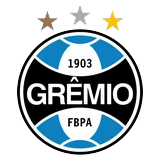
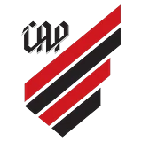
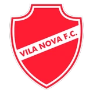
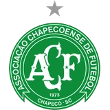
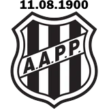
Clubes da nossa rede · Mundo
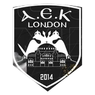
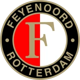
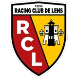
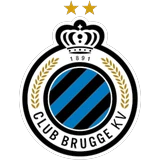
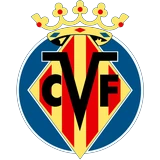
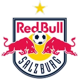
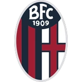
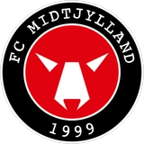
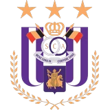
Parceiros comerciais · Quem caminha com a gente
Adidas
Nike
Cloudflare
AWS Amazon
A.E.K. London Escudos e marcas pertencem aos seus titulares e não indicam patrocínio, uso da plataforma nem promessa de clube.
Arquivo ·
Arquivo
Cada rosto,uma história
Um recorte das fotos da nossa trajetória.
O arquivo completo está no Instagram:@assessoria.voxen
O valor real
Quanto custa cada frente, por conta?
Personal Soccer (treinador físico) R$ 7.200/ano
Analista Esportivo + Inteligência artificial R$ 5.000/ano
Psicólogo(a) esportivo R$ 3.600/ano
Nutricionista R$ 3.600/ano
Imagem e Posicionamento (redes sociais) R$ 3.600/ano
Assessor de Carreira Esportiva R$ 7.000/ano
Por conta própria
R$ 30.000
por ano.
O difícil não é contratar cada frente. É fazer as seis falarem entre si, com o Zyron no meio.
Dossiê ·
Seleção
Critério, não volume.
Esse custo só existe pra quem passou no filtro. O
A turma tem 10 vagas: é o máximo que o gerente de carreira acompanha de perto, todo dia.
01
Pro atleta
Você quer ser jogador profissional?
02
Pro atleta
Tá disposto a pagar o preço da disciplina?
03
Pra família
Vocês apoiam ele, mesmo quando for difícil?
Vídeos e cadastros que chegam
Quem entra é escolhido pelo jogo, não pelo pagamento.
Dossiê ·
Interesse alinhado
Hoje, um atleta que a gente coloca num clube fecha ganhando de
R$ 5 a 30 mil
por mês.
A gente lucra no contrato dele. Antes disso, não.
Vocês não estão mais sozinhos .
Escolha o acompanhamento para o seu atleta
vitalício
12x sem juros de
vitalício
12x sem juros de
vitalício
12x sem juros de
O ideal · minha recomendação
Encaminhamentos representam oportunidades reais, sem garantia de aprovação ou contratação.
Confiança pra começar
Garantia
Todo o valor investido é devolvido.
Se não fizer sentido pro momento de vocês, peçam a devolução dentro do prazo da garantia. O dinheiro volta inteiro. Sem precisar comprovar treino, resultado ou aplicação do método.
Sem burocracia.
Prazo da garantia:
100%
do investimento
A garantia cobre a devolução do investimento dentro do prazo informado. Não exige comprovação da aplicação do método.
 A.E.K. London
A.E.K. London